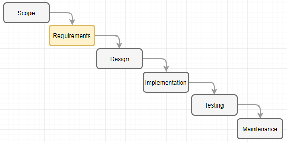
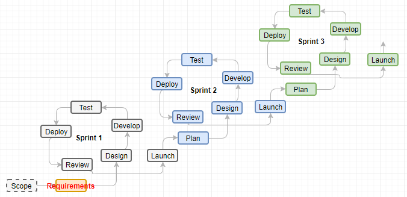
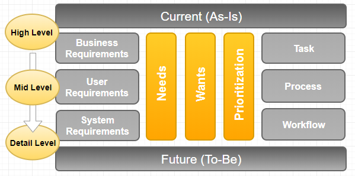
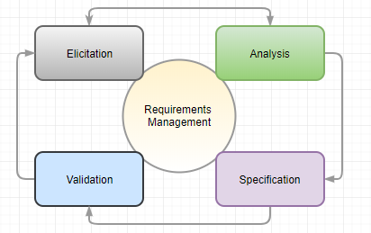
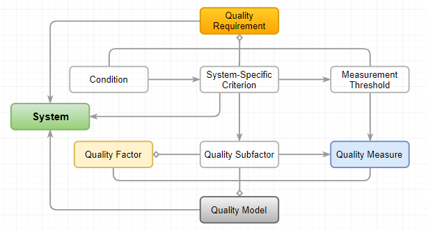
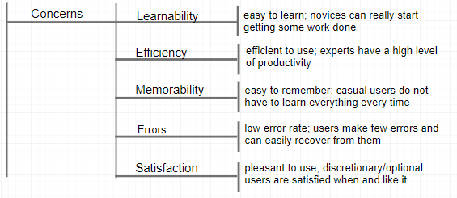
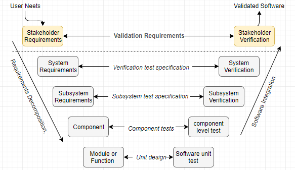
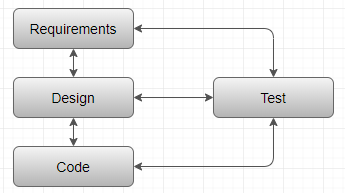

Software Requirements Specification for PT Matahari
Table of Contents
Requirements Elicitation Techniques to Use. 8
Requirements Gathering Organization. 10
Requirement Elicitation for PT Matahari 11
Requirements Analysis and Specification. 13
Business Process Model and Notation. 13
Real-Time Inventory Management 15
The Business Value of Software Quality. 18
Requirements Verification and Validation. 24
Verification Requirements for PT Matahari 28
Requirements Traceability Matrix. 30
PT Matahari Paint, a paint product distributer in Indonesia, has more than 20 years of business with over 200 employees in various cities in Indonesia. In recent years, the demand for paint products rise rapidly at once the city councils in various cities mandate to paint commercial buildings every five years and the rising disposable income contribute for residential buildings. Naturally, lots of new competitors come into the market with advent information technology as the network infrastructure evolves quickly in the region.
It is high time for Matahari to build effective and efficient software system to cope with the challenges. Possibly mission statement below is to answer what is the purpose of software, why they need it, and will this software meet their requirements.
To capture better customer satisfaction through fast, real-time, accurate inventory management with sophisticated pricing and tax calculation, and to plan and forecast the demand and supply accurately on the transaction history.
The goal of the Matahari software system is to have a competitive edge against current and future competitors using timely planning and forecasting and to give better customer experience through effective and efficient resource management.
A requirement determines how to accomplish a goal, where a goal describes a high-level objective of a system to implement (Laplante, 2013). The first activity of software development project is the requirements specification when it follows the waterfall model comprising 1) Requirements specification; 2) Analysis & Design; 3) Implementation; 4) Testing; and 5) Maintenance as depicted in Figure 2 (Letort, 2018).

Figure 1. Waterfall Model
Even prevailing project management process using agile scrum model repeats same iterations as depicted in Figure 3 (RajKumar, 2017).

Figure 2. Agile Scrum Model
Since a requirement is a system or service needed by a stakeholder to solve a problem or achieve an objective, it is imperative activity in software development process (Semusheva, n.d.).
Figure 3 depicts a simplified system overview based on requirements from PT Matahari.
Figure 3. System Overview
Most of Enterprise Resource Planning (ERP) software have these functionalities and features with following disadvantages,
The prime goal of this project is to implement a light ERP software for PT Matahari, which enables business process management (BPM) based on well-known ERP software in the market. Through this project, PT Matahari can make organization’s workflow more effective, efficient, and more capable of adapting to the ever-changing business environments. To meet this goal, here we review brainstorming and prototyping methods out of various elicitation techniques available. Nonetheless, actual development makes use of an agile methodology using user stories and users acceptance test based on working prototypes described below.
Table 1. Requirements Elicitation Methods for PT Matahari
|
Method |
Description |
Justification |
|
Brainstorming |
This brainstorming method is information discussion to generate free expression of ideas by encouraging creativity of participants. This methods starts from problem definition using question to collect information on current business practice. Then each participants express the ideas on the problem.
|
Since the optimum goal of a new software is to fulfill business process management (BPM) to have business invovation, this method can generate invovative ideas based on the prototyping to suggest. The purpose of this method is to collect innovative ideas from multiple parties during requirements elicitation phase.
|
|
Prototyping |
Since this project follows Agile software development cycle, throw-away prototyping suits the purpose of this project. This methods involves rapid creation of a working version of the software so users can try it out and react to a tangible representation with the graphical user interface. This technique works well using Extreme Programming (XP) for instance (Goldsmith, 2015). |
It is easy for PT Matahari to bring up more innovative ideas and to analyze business when there is a tangible view of software to be developed and active participation for the testing. So this method meets the purpose of this project. |
Figure 4 is simplified process of brainstorming. The focus step for this process is idea generation (12manage, n.d.).

Figure 4. Brainstorming Process
On the other hand, the speed of implementation is imperative for the success of project. Figure 5 is a simplified representation of the conventional prototyping model (CodeEpsilon, n.d.). However, this project utilizes agile methodologies to start faster and get to integration quicker as depicted in Figure 6 (ContinuousAgile, n.d.).

Figure 5. Prototype Modeling

Figure 6. Prototyping in Agile
In this example, PT Matahari elicits requirements where development creates working and testable prototype to fulfill the innovative business model including possible use cases.
Figure 7 depicts the requirements gathering framework (Persaud, 2016).

Figure 7. Requirements Gathering Framework
Based on above framework, the table 2 entails the requirements gathering organization to collect information on business requirements, user requirements, and system requirements.
Table 2. Requirements Gathering Organization
|
Title/Role |
Mandatory Reviewer (Y/N) |
Action Items |
|
Project Leader |
Y |
Hold meetings, create use cases, oversee the development work, and manage the project |
|
Business Analyst |
Y |
Analyze current business model to transform it to simple and robust standard business model |
|
Client – CTO |
Y |
Give proper system level requirements including system constraints |
|
Client – Sales |
Y |
Give proper requirements in sales module area |
|
Client – Account Receivable |
Y |
Give appropriate requirements in Account Receivable |
|
Client – SCM |
Y |
Input requirements in inventory management |
|
Programmer |
Y |
Write brief description of system to develop |
|
Programmer |
Y |
Create the user case model |
|
Programmer |
Y |
Create Prototype of the software |
Based on the requirements described earlier, requirements table can be represented as below,
Table 3. Requirements Table
|
Requirements |
Description |
Comments |
Requirements Class |
Methods |
|
Record all business parties |
Using Address Book Master, record all business parties (employee, supplier, and customer) |
Draw relational database to store master, address, who’s who, customer master, supplier master, employee master and so on |
Required |
Prototyping |
|
Manage Inventory in real-time basis |
Based on procurement and sales add and relieve inventory using transaction processing on |
This inventory management is subset of procurement and sales suites |
Required |
Prototyping along with use cases |
|
Capture all transactions |
Create Sales order module and procurement module which works like contract among multiple business parties |
Extends sales and procurement including ledger and history to make use of analysis of data including planning and forecasting |
Required |
Prototyping |
Note: Above table represents limited requirements.
The requirements in inventory management system, sales/procurement systems need additional sub-routines to hold all requirements in detail. Since main concern is the flow of data model is tangible approach as depicted in Figure 8 during development phase.

Figure 8. Data Model for PT Matahari
Based on above data model, each repository comprises one application with same look and feel. Then extend prototypes to individual data entries including the necessary information in it. In this phase, requirements reuse is viable option for this project because the software to develop is generic business innovation approach in Indonesia in benchmarking the advanced business models and processes.
Requirements analysis is sitting between the requirements elicitation and specification as depicted in Figure 9. In other words, the requirements analysis and specification bridge gaps between requirements and software design in software development life cycle. In this figure, the problem domain is as-is system including what a client wants to have, where software system is to-be status of requirements based on specification (Wiegers, 2013).

Figure 9. Requirements Iteration
There are numerous requirements analysis techniques available to utilize for a light ERP system for PT Matahari. The candidate methodology is to be flexible, easy to understand from stakeholders, and sophisticated enough for development to start work. This document entails a standard Business Process Model and Notation (BPMN) to meet these expectation.
This project deals with a light ERP software which synchronizes the movement of inventory with data and integrates multiple business suites into a single system. The purpose of a standard Business Process Model and Notation (BPMN) is to provide businesses with (BPMN, n.d.),
The reason to choose this methodology for requirement analysis is that this model is similar to a flow chart which PT Matahari is familiar. Another reason is that it is easy for the stakeholders to compare as-is business model with to-be business model.
Modeling is essential medium for communication among stakeholders, business analyst, and development group because it gives easier representation of business itself. Based on what PT Matahari wants, below represents three different process using BPMN.
All business starts from recoding all business entities accurately till the various financial reports because these information streamlines the movement of inventory, cash, and data. The basic functionality for the software to build deals with procurement and sales, so recording business parties’ information is crucial for the success of this business.

Figure 10. Customer Master Creation for PT Matahari
Above figure 10 requires the manual intervention to verify the data entered by customer. Since PT Matahari deals with business partners, a certain information need securing to meet business requirements and regulation. Possibly there is room for improvement to meet some of non-functional requirements.
Proper inventory managements enable PT Matahari to lower cost by keeping minimum inventory on-hand, to improve collaboration with suppliers, and automated replenish to satisfy both suppliers and customers. And the real-time inventory management and sharing the supply and demand enables PT Matahari to shift to Supply Chain Management (SCM) for paint products.

Figure 11. Inventory Management for PT Matahari
Inventory management system is subset of sales for demand and procurement for supply. And reasonable parameters for safety stock and the economic order quantity are essential to have successful implementation. Possibly, this functionality has to extend to the cycle count or physical inventory count, and inventory adjustment and issue to have accurate values of on-hand quantities.
Figure 11 depicts some transition from current business of PT Matahari by adding quotation before a firm sales order.

Figure 12. Sales Order Management
In the long run, PT Matahari needs to focus on minimum inventory with competitive price by setting sophisticated price hierarchy using the advanced price schedule. In this phase, the integration with Account Receivable, security of applications, mobility, and planning/forecasting features need discussing.
So far, the focus was made in ‘what’ to implement based on what PT Matahari wants to have including suggestion made by the project team to conform to the basic design on the functional requirements. On the other hand, quality requirements reflect how to meet the non-functional requirements, to deal with ‘how’ well the software should be performed. Hence, quality requirements are tightly associated with software structural qualities to define the degree of correctness of the product.
In figure 13, quality model defines the meaning of quality for a system to implement. The quality requirements are about how to utilize the quality models available (Firesmith, 2005). Through this approach, the quality of quality requirements have characteristics of mandatory, feasible, scalable, unambiguous, verifiable, correct, prioritized, and traced.

Figure 13. Quality Requirements
Commonly, the benefits of high quality systems enable the business to be responsive, innovative, increase competitive edge, and reduce total cost of development and ownership. In detail (Bessin, 2004),
As reviewed above, a good quality software gives direct financial benefits to customers with higher customer satisfaction. Figure 14 depicts, the quality model suggested by ISO 25010 which emphasizes on the measurable factors (Open Universiteit, n.d.).

Figure 14. Parameters of Quality
Here we review functional suitability, usability, and maintainability because these quality attributes affect a light ERP system of PT Matahari.
According to ISO/IEC 27000:2014, functional suitability is degree to which a system provides functions to meet stated/implied needs which is functional requirements. So these attributes affirm that the software to develop performs what are requested, but also it performs three characteristics which are functional completeness, functional correctness, and functional appropriateness as shown in Figure 15 (Rodriguez et al., 2016).

Figure 15. Subcharacteristics of functional suitability
ISO/IEC 25010 defines: functional completeness as the degree to which a set of implemented functions covers the specified tasks and meets the users’ objectives; functional correctness as the degree to which a product or system offers correct results, with required degree of precision; and functional appropriateness as the degree to which the functions facilitate the accomplishment of the tasks and objectives set.
In any organization, the ERP software is the backbone of information technology system, hence the importance of functional suitability is paramount because the software computes the output accurately and same has to comply with the standard business rules and regulations or legislative requirements if any.
According to Barbacci, usability is a measure of how well users can take advantage of some of systems’ functionality (Barbacci, 2004). This attribute defines how usable a software is to learn to operate, prepare inputs for, and interpret outputs of a system. The intersection in figure 16 depicts simplified definition of a good usability.

Figure 16. Software Usability
Subcharacteristics of usability includes appropriateness, recognizable, learnability, operability, user error protection, user interface aesthetics, and accessibility. Figure 17 reviews same in detail (Barbacci, 2004).

Figure 17. Concerns in Usability
User centered design principle for PT Matahari can contribute some of areas below,
All these factors are important to have successful project without spending millions of dollars.
The requirement for maintaining software can be fixing a certain problem (corrective maintenance) in a system or enhance/add new functionality (adaptive maintenance) in the system. And this maintenance can be extended to perfective maintenance (the changes in the features and requirements) and preventive maintenance (to help the software be scalable, stable, understandable, and maintainable) as the system gets matured (t4tutorials, 2018). Most of the software vendors follow the standard support mechanism for maintenance of the system. Some call it the diagnostic methodology which is a common way to support system for maintenance. Figure 18 depicts the standard post-delivery stage process for software system maintenance process.

Figure 18. Maintenance Process
The benefit which PT Matahari can enjoy by putting money upfront is that,
Table 4. Relationship between Criteria and Factors in Maintainability
|
Criterion\Factors |
Understandability |
Modifiability |
Testability |
Portability |
|
Readability |
x |
|
|
|
|
Traceability |
x |
|
x |
|
|
Coupling |
x |
x |
x |
|
|
Cohesion |
x |
x |
|
|
|
Size |
x |
x |
x |
|
|
Control Structure |
x |
x |
x |
|
|
Independence |
|
|
|
x |
|
Consistency |
x |
|
|
|
|
Documentation Accuracy |
x |
|
x |
|
Criterion in table 4 are derived from different documents in software requirements engineering as below (Frappier et al., 1994),
Figure 19 depicts a simple representation of verification and validation which occurs in a different phases of system life cycle. V-model is not a choice for software development process in this project, but this v-model represents clear semantics. All activities below validation requirements are verification activities (Mehle, 2017).

Figure 19. Verification and Validation in V-Model
The software specification review for PT Matahari covers the software requirement specification and interface requirements specification to reflect system level requirements. Commonly, the validation is done using a model or of its demonstration. The task of system verification is to verify/prove the system functionality concurrently as the design transforms into functional components, module, subsystem, and system level objects. So the highest level of verification, testing against the stakeholders’ requirements can be called validation.
Requirements validation is to check the right system is built to satisfy the stakeholders by checking stakeholders’ goals and requirements (Jackson et al., 2008). Figure 20 depicts the validation and verification in the project because Validation and Verification (V + V) activities take place throughout the lifecycle of the project (Boehm, 1979).

Figure 20. Requirements and Design V & V Sequence
The goal of this project is to build a light ERP software tailored for PT Matahari which system is small but sustainable and scalable. Then requirements validation step is to ensure that this software requirements specification (SRS) is complete, consistent, modifiable, and traceable as reviewed in quality attributes. To meet these goals in the project, the techniques to validate requirements for PT Matahari are review and inspect, prototyping, traceability and testing.
As depicted in figure 21, the review and inspection is iterative validation steps with the stakeholders, PT Matahari. The review takes place against the analysis made using BPMN tools in the area of address book management, inventory management, and sales order management. This technique go through 3 different steps as depicted in figure 21 (Kotonya et al., 2008).

Figure 21. Review and Inspection
Prototyping technique is to have both the developers and the users from PT Matahari are on the same page. This methods enables the users to test the validity of the programs and completeness of the requirements. In following agile software development for PT Matahari, solutions evolve through collaboration cross-functional team. This technique is especially important to meet the quality requirements which are functional suitability, usability, and maintainability.
Commonly, using a traceability to make sure that all elicited requirements are to be traced back to justify both business requirements and functional requirements for PT Matahari. Following section elaborates this technique further.
Along with the prototyping discussed above, this is most crucial part during validation to eliminate possible missing information or any information which is ambiguous. All functional requirements requested by PT Matahari need to go through the test cycle. However, it may not be easy to adopt non-functional requirements using this technique we have discussed during quality factors.
Requirements verification is to check system is being built right by ensuring each step followed in the process of building the software to yield the right product in checking consistency of the software requirements specification artifacts and other software development products (Jackson et al., 2008). Common methods to verify requirements are inspection, demonstration, test, and analysis (Adams, 2010).
The inspection process is a detailed audit and review of the software code and documentation, which is referred as a code review. This technique is very effective to discover error in codes as depicted in figure 22 (Letort, 2018).

Figure 22. Inspection and Testing
In inspecting the inventory management for PT Matahari, make it sure that there are multiple entries for Item Master, Item Branch, Item Location, Item Cost, Item Price, and Item Ledger with all necessary columns in it including easier search of each controls.
The testing process is to find defects in the system in development. This process encompasses process definition, testability, and recording of it. Standard quality assurance and quality control processes are in line with this technique in a software system (Letort, 2018). Through this, user expect the system produces a specific and predefined output based on the requirements specified. Throughout software development life cycle for PT Matahari, this technique is crucial because a light ERP software comply with all regulations in Indonesia and need to maintain higher integrity with tables related across system including future extension. And this method conforms all auditing requirements on any change of data across suites.
Demonstration determines conformance to the system requirements using the operation, adjustment, or reconfiguration of a test document to verity system characteristics using observing and recording functional operation (Letort, 2018).
For address book management for PT Matahari, the demonstrations gives users same look and feel and all interface from the entry point are intuitive. For instance, there is only one address book number which contains a legal entity name, tax ID, addresses, and related addresses. Then each entity allows user to specify the types of account: employee, business partners, suppliers, and customers which has different columns to identify each and individual entities.
Commonly, analysis involves the verification of system using models, calculations and testing equipment using generally accepted analytical techniques to determine the program meets specified requirements. This technique takes charge when demonstration or testing is not feasible option. Active testing and demonstration are due course for this project hence this technique may put less emphasis for PT Matahari.
Table 5 represents verification requirements for a light ERP system for PT Matahari.
Table 5. Verification Requirement
|
Verif. Para. |
Verification Requirement |
Level |
|
V_1.0 |
Using client machine, the light weight ERP software performs below, 1. All business entity is stored, which stores information on Address, Customer Master, Supplier Master, Employee Master 2. Inventory is managed with multiple hierarches including Item Master, Item Branch, Item Location, Item Ledger, Item Cost, and Item Price 3. Sales Order is managed using order activity rules to synchronize the movement of inventory, cash encompassing sales order entry, print pick ship, shipment confirmation, print invoice, and sales update to interface with Account Receivable and General Ledger |
Stakeholder |
|
V_1.1 |
Entity management, Inventory Management, and Sales Order Management |
Module |
|
V_1.1.1 |
Each module above are independent and fully functional. 1. Entity management allows user to add, update, and delete the entity for trading 2. Inventory management enables user to review on-hand quantity including the branch, location, and lot level 3. Sales order management includes all activities related with sales or paint goods. |
System |
|
V_1.1.2 |
Customer master to store information on customer including credit limit, open order amount, total billed, and total cash receipt |
Component |
|
V_1.1.3 |
Suppler master includes the currency to transact, payment terms, and other trading condition |
Component |
|
V_1.1.4 |
Employee master stored information on identification number, address, PDBA (Pay, Deduction, Benefit, and Accrual) information |
Component |
|
V_1.2.1 |
Item master stores the specification of item including item number, description, unit of measure |
Component |
|
V_1.2.2 |
Item branch application specifies the item specification in a certain branch where branch is warehouse, store, depot, cost center |
Components |
|
V_1.2.3 |
Item Location stores moving quantities including on-hand quantity, quantity soft committed, hard committed, in-receipt |
Components |
|
V_1.2.4 |
Item cost application maintains the cost of goods in a specific branch and location |
Components |
|
V_1.2.5 |
Item Price application enables user to enter the price of item per certain unit of measure and currency code combination with price effective date |
Components |
|
V_1.3.1 |
Sales order entry comprises header to store information customer including order date, request date, payment terms. Order detail stores information on item with quantity, unit of measure, cost, and price |
Components |
|
V_1.3.2 |
Print pick slip represents actual relieve of inventory |
Components |
|
V_1.3.3 |
Warehouse performs shipment confirmation based on actual shipping |
Components |
|
V_1.3.4 |
Print Invoice prints the amount billed including tax |
Components |
|
V_1.3.5 |
Sales-update application interfaces sales transaction with account receivable and general accounting as a daily closing |
Components |
|
V_1.4 |
Link customer master, supplier master, and employee master from address book master |
Sub-system |
|
V_1.5 |
Maintain relationship among, item, item branch, item location, item cost, and item price |
Sub-system |
|
V_1.6 |
A menu for sales order processing sets entry points for each transactions in sales |
Sub-system |
|
V_1.6.1 |
Sales order allows to view customer related information, item related information, item availability, and demand plan |
Components |
Requirements Traceability Matrix is a document that links requirements throughout the validation process. The goal for this document is to make sure that all requirements defined for a system are tested and verified. Usually, the requirements traceability matrix is developed along with the requirements elicited including the user requirements specification and functional requirements specification.
Table 6 and table 7 shows the relationship between two matrixes to enable forward and backward track and trace (Ludwig Consulting Services, 2010).
Table 6. User Requirements Matrix
|
ID |
User Requirements |
Forward Traceability |
|
U1 |
Users shall enter all business entities |
S10 |
|
U2 |
Users shall register customer master, supplier master, and employee master |
S11 |
|
U3 |
Users shall create item master |
S12 |
|
U3 |
Users shall specifies item master and item branch relationship |
S12 |
|
U4 |
Users shall enter item cost |
S13 |
|
U5 |
Users shall enter item price |
S14 |
|
U6 |
Users shall enter sales order header and detail |
S15, S16 |
Note: The numbering is simplified for easier reading
Table 7. Functional Requirements Matrix
|
ID |
System Requirements |
Backward Traceability |
|
S10 |
The system shall add, copy, update, delete entity information |
U1 |
|
S11 |
The system shall add, copy, update, delete customer master, supplier master, and employee master |
U2 |
|
S12 |
The system shall add, copy, update, delete item information with default values |
U3 |
|
S13 |
The system shall validate the item cost |
U4 |
|
S14 |
The system shall validate the item price |
U5 |
|
S15 |
The system shall default and validate customer’s information in sales order header |
U6 |
|
S16 |
The system shall default and validate item information in sales order detail |
U6 |
Requirements verification and validation are to ensure the delivery of what the client wants and verification and validation iterates across software development lifecycle including requirements elicitation, requirements analysis, and requirements specification phases.
Requirements traceability matrix enables for both stakeholder and auditor to check the completeness of requirements. This document determines whether the current project requirements are being met and it get implemented right. Figure 23 depicts traceability matrix with simplicity to demonstrate how traciability tracks and traces in the software development life cycle.

Figure 23. Simplified Relationship for Matrix
12manage, n.d., Generating New Ideas in a Group Activity. Explanation of Brainstorming. Retrieved February 26, 2018, from https://www.12manage.com/methods_brainstorming.html
Adams, C. (2010). What are the Four Fundamental Methods of Requirement Verification? Retrieved March 20, 2018, from http://www.modernanalyst.com/Careers/InterviewQuestions/tabid/128/ID/1168/What-are-the-four-fundamental-methods-of-requirement-verification.aspx
Barbacci, M. R., (2004). Software Quality Attributes: Modifiability and Usability. Retrieved March 13, 2018, from http://www.ieee.org.ar/downloads/Barbacci-05-notas1.pdf
Bessin, G. (2004). The Business Value of Software Quality. Retrieved March 12, 2018, from https://www.ibm.com/developerworks/rational/library/dec04/bessin/bessin-pdf.pdf
Boehm, B. W. (1979). Guideline for Verifying and Validating Software Requirements and Design Specifications. Retrieved March 19, 2018, from http://csse.usc.edu/TECHRPTS/1979/usccse79-501/usccse79-501.pdf
BPMN. (n.d.). Business Process Model and Notation. Retrieved March 6, 2018, from http://www.bpmn.org/
CodeEpsilon. (n.d.). Software Development. Retrieved February 26, 2018, from http://www.codeepsilon.com/software-development.html
ContinuousAgile. (n.d.). About Agile. Retrieved February 26, 2018, from http://www.continuousagile.com/unblock/whatisagile.html
Firesmith, D. (2005). Quality Requirements Checklist. Journal of Object Technology. Vol. 4, No. 9. Retrieved March 9, 2018, from http://www.jot.fm/issues/issue_2005_11/column4.pdf
Frappier, M. Matwin, S., and Mili, A. (1994). Maintainability: Factors and Criteria. Software Metrics Study: Technical Memorandum. Retrieved March 13, 2018, from http://www.dmi.usherb.ca/~frappier/Papers/tm1.pdf
Goldsmith, R. F. (2015). Use elicitation techniques to discover software requirements. Retrieved February 22, 2018, from http://searchsoftwarequality.techtarget.com/feature/Use-elicitation-techniques-to-discover-software-requirements
Jackson, M. and Heymans, P. (2008). Requirements Verification and Validation. Retrieved March 19, 2018, from csis.pace.edu/~marchese/CS775/Lectures/775L12.ppt
Laplante, P. A. (2013). Requirements engineering for software and systems (2nd Ed.). Boca Raton: Taylor & Francis, CRC Press.
Letort, D. B. (2018). CS641-1801B-01: Software Requirements Engineering. Requirements & Quality. Retrieved March 20, 2018, from phase 4 – Chat material in CTU online learning material resource.
Letort, D. B. (2018). Overview of Requirements Engineering. Retrieved February 15, 2018, from Phase 1 – Chat Material in CTU online learning materials resource.
Ludwig Consulting Service. (2010). Requirements Traceability Matrix. Retrieved March 20, 2018, from http://www.jiludwig.com/Traceability_Matrix_Structure.html
Mehle, M. E. (2017). Particle Accelerators as Medical Devices. Retrieved March 19, 2018, from https://www.linkedin.com/pulse/particle-accelerators-medical-devices-marcos-e-mehle
Open Universiteit. (n.d.). Requirements engineering and quality attributes. Retrieved March 9, 2018, from https://www.ou.nl/documents/40554/349790/IM0203_02.pdf
Persaud, D. (2016). Business Requirements Gathering for Enterprise Software Selection. Retrieved February 26, 2018, from https://selecthub.com/technology-selection/business-requirements-gathering-enterprise-software-selection/
Rajkumar, J.B. (2017). How to Deliver High Value Software Features in a Short Time Period using Agile Scrum Process. Retrieved February 20, 2018, from online http://www.softwaretestinghelp.com/how-to-deliver-high-value-software-features-in-a-short-time-period-using-agile-scrum-process/
Rodriguez, M., Oviedo, J. R., and Piattini, M. (2016). Evaluation of Software Product Functional Suitability: A Case Study. Retrieved March 13, 2018, from http://www.aqclab.es/images/AQCLab/Noticias/SQP/software-quality-management-evaluation-of-software-product-functional-suitability-a-case-study.pdf
Semusheva, O. (n.d.). Requirements. Why is it important? Retrieved February 16, 2018, from https://steelkiwi.com/blog/requirements-why-it-important/
T4tutorials.com. (2018). What is Software Maintainability? Retrieved March 13, 2018, from https://www.t4tutorials.com/software-maintainability-in-software-engineering/
Wiegers, K. E. (2013). Software requirements. Retrieved March 5, 2018, from the presentation material found in csis.pace.edu/~marchese/CS775/Lectures/775L4.ppt